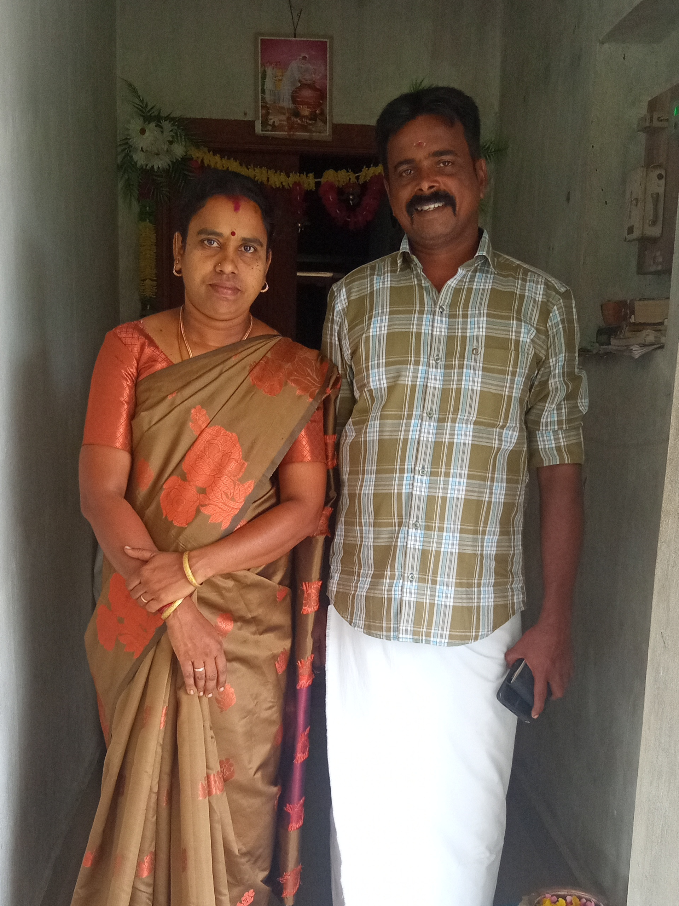
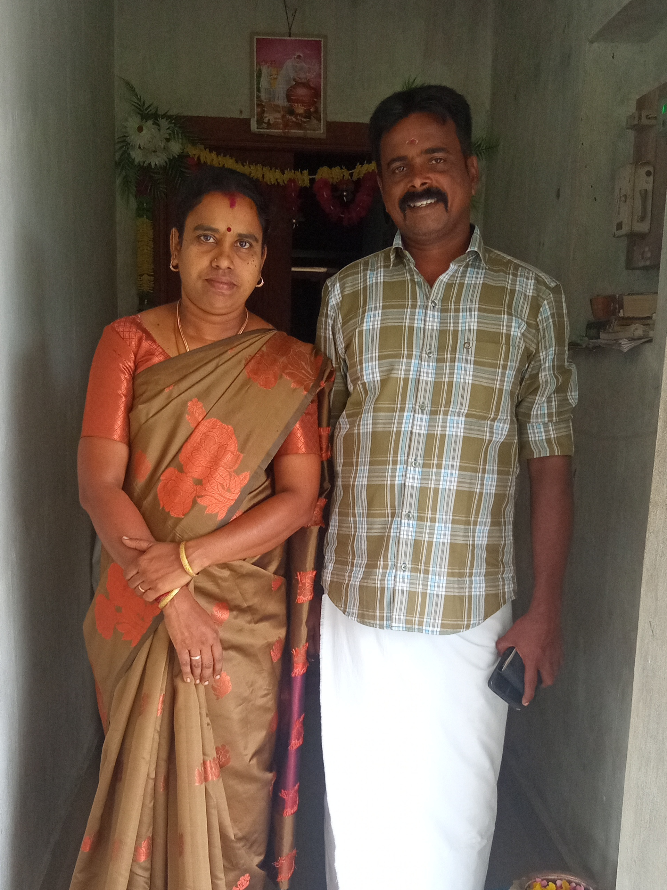
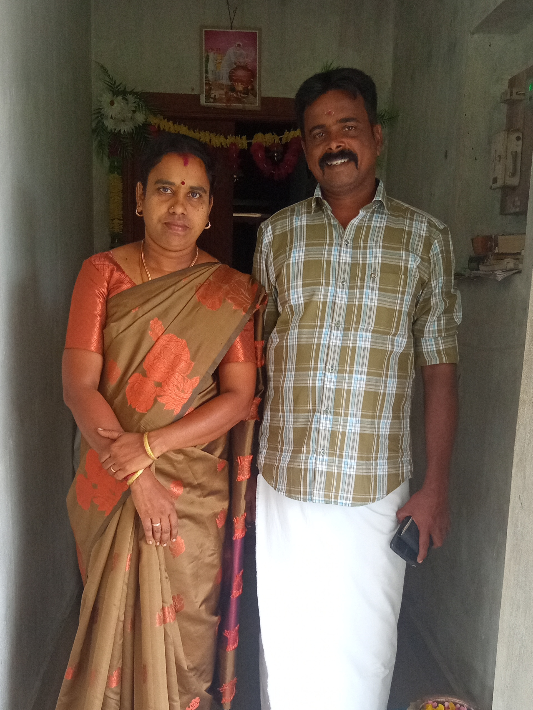

Hey this is jayasuruthi from ayakkaranpulam, i was born on 29th oct 2006.
My father name is Subramanian and my mother name is Ananthi. I have a younger sister named jayapriya.

I studied class 1 to 8 in a nearby middle school called Mahatma gandhi middle school.
Then studied 9th to 12th in Government girls higher secondary school.
Now currently studying my UG course b.sc computer science in Dr.M.Sivakkannu women's arts and science college.


I have a goal to become a professional programmer.
And i have many hobbies such as singing, drawing, sewing, carrom and etc..,